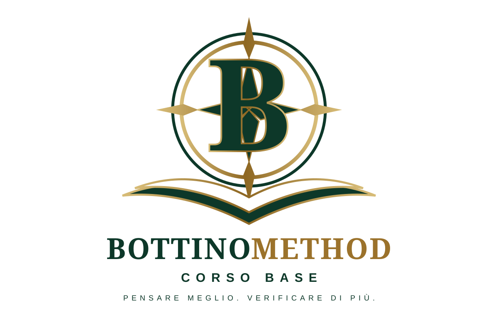

Studenti e persone in formazione
Per imparare a valutare fonti, citazioni e contenuti online, distinguendo i dati dalle interpretazioni.

Progressi salvati su questo dispositivoPRIMA DI INIZIARE · ORIGINE DEL METODO
Il Bottino Method nasce da un lavoro di ricerca sviluppato da Michele Bottino per analizzare informazioni e fonti senza confondere ciò che è documentato con ciò che viene riportato, interpretato o dedotto.
Il metodo è stato formalizzato nell’Integrated Archival Analysis System (Bottino Method): sviluppo metodologico e applicazione alla ricerca storico-documentaria, pubblicato su Zenodo. Questo Corso Base ne traduce i principi fondamentali in un percorso introduttivo e operativo.
Perché lo stesso problema si presenta ogni giorno davanti a notizie, documenti, siti, messaggi e risposte dell’intelligenza artificiale: che cosa sappiamo realmente, e su quali basi possiamo affermarlo?
FORMAZIONE · BOTTINO METHOD
Analisi, verifica e controllo dell’informazione nell’era dell’intelligenza artificiale.
Un percorso pratico e progressivo per distinguere fatti, affermazioni e interpretazioni, valutare le fonti e utilizzare l’IA con maggiore consapevolezza.
SCOPRI A CHI È RIVOLTO →Consulta il percorso attualePRIMA DI ISCRIVERSI · CONOSCERE IL PERCORSO
Non è necessario essere informatici o ricercatori. Il Corso Base è pensato per chi deve comprendere, valutare e utilizzare informazioni senza confondere un'affermazione con una prova.
Per imparare a valutare fonti, citazioni e contenuti online, distinguendo i dati dalle interpretazioni.
Per proporre un metodo di lettura critica e verifica delle informazioni nelle attività didattiche.
Per affrontare documenti, testimonianze e fonti d'archivio con attenzione alla provenienza, alle lacune e ai riscontri.
Per esaminare report, documenti e informazioni di lavoro prima di utilizzarli nelle decisioni.
Per esercitare il controllo delle affermazioni e la distinzione tra fonti indipendenti e contenuti ripresi da altri.
Per riconoscere risposte non verificate, chiedere evidenze e controllare le conclusioni generate dall'IA.
OBIETTIVI FORMATIVI
Al completamento delle otto unità e delle prove previste avrai esercitato un processo di analisi che potrai applicare a casi concreti.
La presentazione è accessibile a tutti. La registrazione personale sarà richiesta solo al momento dell'iscrizione alla versione con account. Il percorso attualmente pubblicato resta consultabile e salva i progressi sul dispositivo.
Attestato di completamento del corso; non è una qualifica professionale riconosciuta.RELEASE UFFICIALE · ZENODO
La baseline documentale ufficiale del Bottino Method – Corso Base, Edizione 2026, è pubblicata su Zenodo. Il deposito comprende il documento principale e i quattro materiali didattici BM-CB-01, BM-CB-02, BM-CB-03 e BM-CB-04.
DOI: 10.5281/zenodo.23198223 · Apri il record ufficiale su Zenodo →
Citazione: Bottino, Michele (2026). Bottino Method – Corso Base: percorso didattico per la verifica delle informazioni, la valutazione delle fonti e il controllo dell’intelligenza artificiale. Release 1.0. Zenodo. DOI: 10.5281/zenodo.23198223.
PROGRESSI DEL CORSO
Lo stato del corso viene salvato esclusivamente nel browser di questo dispositivo. Non è richiesta autenticazione.
ESEMPIO INTERATTIVO · NON VALUTATO
Un sito afferma: «Un documento appena scoperto dimostra che il castello fu costruito nel 1427». Hai letto l’articolo, ma non hai visto il documento citato. Quale frase è metodologicamente più corretta?
VERIFICA 1 · UNITÀ 1–3
5 domande applicative. Una domanda alla volta, con spiegazione immediata. Per superare la verifica servono almeno 4 risposte corrette su 5.
VERIFICA 2 · UNITÀ 4–7
5 domande applicative. Una domanda alla volta, con spiegazione immediata. Per superare la verifica servono almeno 4 risposte corrette su 5.
TRASPARENZA DEL PERCORSO
Il corso adotta elementi di trasparenza coerenti con la Raccomandazione del Consiglio UE del 16 giugno 2022 sulle micro-credenziali. Non è dichiarato un livello EQF/ECTS e non viene rivendicato accreditamento o riconoscimento pubblico non posseduto.
AUTORE ED EMITTENTE
Michele Bottino è l’autore del Bottino Method e del relativo Corso Base. Nell’ambito di questo percorso, l’attività documentata riguarda analisi e verifica delle informazioni, valutazione delle fonti, tracciabilità delle evidenze e controllo degli output prodotti mediante intelligenza artificiale.
Questa sezione documenta il ruolo dell’autore e dell’emittente. Non attribuisce qualifiche accademiche, professionali, accreditamenti o riconoscimenti pubblici non documentati.
BIBLIOTECA
Corpus ufficiale Bottino Method · Corso Base · Edizione 2026 · Release 1.0. I documenti seguenti rimandano ai file pubblicati nel deposito Zenodo, DOI: 10.5281/zenodo.23198223.
Il corpus documentale della Release 1.0 comprende il documento principale e i quattro materiali didattici BM-CB-01–04. I collegamenti a Zenodo mantengono come riferimento i file della versione pubblicata.
BOTTINO METHOD
Completa le 8 unità, supera le due verifiche intermedie e la prova applicativa finale.
Si attesta che
ha completato il
CORSO BASE — BOTTINO METHOD
Attestato di partecipazione e completamento del Corso Base. Non costituisce titolo di studio, abilitazione o certificazione professionale riconosciuta.